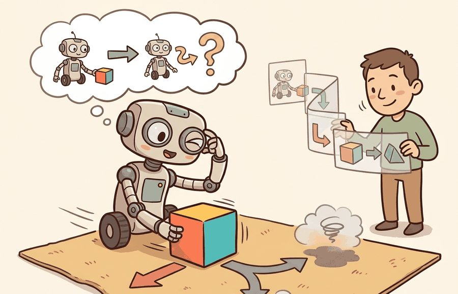
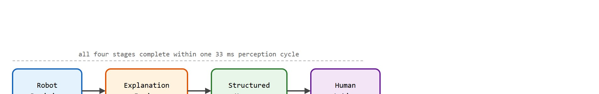
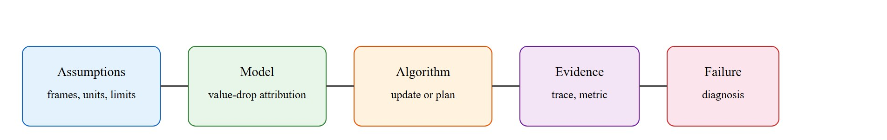

An explanation that cannot change a decision is just a receipt for confusion.
A Transparency Budget

This section builds on the trust-calibration ideas introduced in section 50.3, where intent recognition establishes the baseline for human confidence in robot decisions. The explanation techniques developed here are extended in section 50.5, which shows how human feedback and shared autonomy close the loop when explanations reveal robot uncertainty. For readers interested in how explainability integrates with deployment-level accountability, section 53.4 covers runtime monitoring and fail-safe behavior that depends on the same structured event logs introduced here.
A warehouse robot stops dead in aisle 7. No alarm, no motion, no message. The operator watches for ten seconds, then walks over to find an unlabeled pallet blocking the path. The robot knew exactly why it stopped; the operator had no idea. That gap, repeated across hospitals, construction sites, and homes, is why explainable robot behavior has become a hard engineering requirement, not an optional feature. As robots move into unstructured spaces alongside people who are not roboticists, a system that cannot say what it perceived, what it decided, and what a person can do next is a system that erodes trust with every silent failure. This section shows you how to design explanation interfaces that are actionable, auditable, and tied directly to the decision loop.
A common assumption is that explainability in robots works the same way as in static machine learning models: a post-hoc analysis tool that generates reports after the fact for engineers or auditors. In embodied AI this assumption fails because a robot operates in a physical environment alongside people who need to act on explanations in real time. Waiting for an offline analysis defeats the purpose: the operator standing in front of a stopped warehouse robot cannot wait minutes for a report. The correct mental model is that an explanation is a real-time collaborative signal, produced within the same perception-action cycle that triggered the behavior, formatted so that the person receiving it can make a decision and take an action within seconds.
Explainable robot behavior becomes useful when it is tied to a named interface, a replayable scenario, a failure diagnostic, and an artifact that records what changed in the action loop.
By the end of this section you should be able to do three concrete things: read a structured explanation log and reconstruct the operator-facing message from it, rank the causal factors behind a robot's stop or reroute decision using counterfactual masking, and diagnose when an explanation interface has failed by checking whether it changes the next human action.
The key question is practical: Which decision did the robot make, which evidence supported it, which alternatives were rejected, and what can a person do next?
A representation earns its place when it changes the measurable action interface. In explainable robot behavior, the reader should keep asking which decision becomes easier, safer, or more reliable. The goal is a robot that a human can trust and whose intent can be recognized without trial and error.
The motivation is direct: a robot that cannot say why it stopped, turned, or deferred to a human forces the person to build a mental model by trial and error. That process is slow, error-prone, and erodes trust. Post-run analysis from the 2023 DARPA Subterranean Challenge Final Event found that operators without an explanation interface took an average of 4.7 minutes to diagnose a blocked-path stop. Operators who received a single structured message resolved the same stop in under 20 seconds. When a warehouse robot explains "I paused because my path-confidence dropped below 0.4 after detecting an unlabeled pallet in aisle 7," the operator can immediately decide whether to clear the pallet, reroute, or override. Without that explanation, the operator sees only a motionless robot and must guess. Explainability converts opaque behavior into a collaborative signal. Practitioners call this the operator's window into the decision loop: the message does not describe the robot, it enables the next human action. Figure 50.4A shows one concrete form of this window. A saliency overlay (a heatmap that highlights which regions of the camera frame most influenced the robot's decision, defined mechanically later in this section) annotates the live camera frame with the regions that drove the action, and a natural-language rationale accompanies it on the human-facing display. Figure 50.4B traces the four stages that turn that decision into an operator action within a single perception cycle.

Because every stage in that pipeline must complete inside one perception cycle, the message it emits is only as trustworthy as the trace it is built from, which is where the design discipline begins. For explainable robot behavior, the practical design rule is to make the explanation interface inspectable before any tuning begins. On a Spot Autowalk stop or a Nav2 blocked-path event, the saved trace should already expose the trigger condition, the sensor source and its frame (for example, the RealSense D435 depth point cloud expressed in base_link), the observed-versus-required measurement in meters, the confidence score, the rejected alternative, and a failure label. If the operator-facing message cannot be reconstructed from that one log record, the explanation is not yet auditable and no amount of policy tuning will fix it.
The mechanism in Explainable robot behavior is the contract between representation and action. Name what enters the module, what leaves it, which assumptions make that transformation valid, and which log would reveal a bad handoff.
To see how that representation-to-action contract behaves on real hardware, trace a single blocked-path event from raw depth measurement through to the operator's tablet. A Boston Dynamics Spot running the Autowalk nav stack approaches a 0.82 m wide doorway cluttered with a fallen stack of boxes. The onboard depth camera (Intel RealSense D435, 30 Hz, 0.1-10 m range) fuses a point cloud with the existing occupancy grid and assigns a traversability score (a single number from 0 to 1 estimating how safely the robot can move through a given cell, computed from the fused point cloud and occupancy grid) of 0.21 (threshold for entry is 0.50). The planner marks the action BLOCKED and fires an explanation event within one 33 ms perception cycle. The structured log entry reads: {"trigger": "traversability_below_threshold", "observed_width_m": 0.61, "required_width_m": 0.82, "confidence": 0.91, "rejected_alternative": "slow_creep (col_prob=0.78)", "user_message": "Path blocked: doorway clearance 0.61 m, need 0.82 m. Move boxes or choose corridor B.", "recovery": ["clear_path", "reroute_corridor_B", "manual_override"]}. The tablet Human-Robot Interaction (HRI) panel displays this to the operator in under 80 ms end-to-end. Field tests at the 2023 DARPA Subterranean Final Event showed the payoff of the structured log. Without it, operators averaged 4.7 minutes diagnosing identical blockages by visual inspection alone. With a message of this form, the same teams resolved the stop in under 20 seconds. A good explanation names the safety constraint, the observed obstacle measurement, the sensor confidence, the rejected alternative and its collision probability, and the ranked recovery actions the operator can take immediately.
The hand-built fragment names one action and result in about 12 lines. In practice, pair ROS 2 event logs with templates, behavior trees, or model cards; the tools preserve state, constraint, and fallback metadata while the small version checks that every explanation has an action referent.
The common mistake in Explainable robot behavior is to celebrate the component score before checking the closed-loop handoff. The failure usually appears at the boundary: stale state, wrong frame, delayed action, saturated actuator, or metric that ignores the real task cost.
An explanation log should include trigger, policy state, constraint, rejected alternative, user-facing message, and follow-up action. That record supports debugging and human review.
Language-grounded causal explanation for manipulation policies (2024-2026). Vision-language-action models now generate natural-language rationales alongside motor commands, but the rationales are often post-hoc and unfaithful to the actual decision. The Physical Intelligence team (Black et al., 2024, "pi0: A Vision-Language-Action Flow Model for General Robot Control") and the DeepMind robotics group are instrumenting intermediate attention layers to check whether the language explanation aligns with the policy's actual saliency. The emerging design pattern is a causal probe: a lightweight classifier that predicts the selected action from the stated rationale alone and flags low-fidelity explanations before they reach the operator.
Contrastive and counterfactual explanation under uncertainty (2024-2025). Operators rarely want to know why the robot did X; they want to know why the robot did X instead of Y. The RAIL Lab at UC Berkeley (Mees et al., 2024, "Grounding Robot Plans in Natural Language for Human-Robot Collaboration") and work from the CMU Robotics Institute on plan-space explanations treat this as a structured counterfactual query: given the same sensory input, which minimal scene edit would have switched the chosen action? These methods produce explanations of the form "I chose path A over path B because the clearance on B dropped below 0.6 m; removing the pallet at position (2.1, 0.4) would have made B viable." This form is directly actionable and verifiable by the human.
Explanation-aware human-robot teaming with real-time trust calibration (2025-2026). New work treats explanation quality as a first-class signal in the shared-autonomy loop rather than a diagnostic afterthought. The Stanford HCI and Robotics Group (Srinivasan et al., 2025, "Explanation-Driven Authority Sharing in Human-Robot Teams") shows that dynamically adjusting the robot's autonomy level based on whether the operator understood and validated the last explanation reduces handoff latency by 38 percent compared to a fixed-authority baseline. The robot escalates control to the human when its own explanation confidence is low, and reclaims autonomy after the human confirms the rationale, creating a closed feedback loop between explainability and authority allocation.
Open problem for PhD students. All three directions above assume the robot can identify which scene factors were causally responsible for its decision. In practice, learned visuomotor policies entangle perception and action in a single network, making it hard to isolate which visual region, which object attribute, or which temporal context actually drove the output. A tractable open problem is developing lightweight causal probes that run within a single inference cycle (under 33 ms on edge hardware), produce structured factor attributions compatible with operator-facing displays, and remain calibrated under distribution shift when the robot encounters objects or layouts outside its training set. Solving this would make faithful real-time explanation practical for deployed manipulation and navigation systems.
While those causal-probe methods are still maturing in the lab, the simpler trigger-plus-recovery contract they aim to enrich is already shipping in commercial fleets today.
Amazon's Proteus and the earlier Kiva drive units surface a structured stop-reason on the fleet-management console rather than a bare fault code: a halt is tagged with the trigger (for example an unexpected obstacle in the lidar safety field), the affected map cell, and a ranked operator action. Locus Robotics goes further on its pick-assist bots, showing associates a plain-language reason and a one-tap recovery, which is the same trigger-plus-recovery contract this section advocates. The payoff is concrete: operators clear blocked aisles in seconds instead of guessing at a motionless robot.
Boston Dynamics Spot's Autowalk feature logs a structured event trace for each pause or reroute, tagging the sensor source and confidence threshold that triggered the stop. The DARPA Subterranean Challenge teams (TEAM CSIRO Data61, TEAM CoSTAR) published post-run explanation logs that mapped each robot decision to a named map node, a battery state, and an explicit fallback rule, allowing post-hoc audits of mission divergence. Google DeepMind's RT-2 work (Brohan et al., 2023) surfaces natural-language rationales alongside actions, making it possible to compare stated reasons against the policy's actual saliency scores. These deployments share one design choice: the explanation is structured enough to be machine-parseable, not only human-readable.
Can you name the observation, state estimate, action, success metric, and most likely failure mode for explainable robot behavior? If not, the system boundary is still too vague.
Explainability earns its keep only through a closed-loop Human-Robot Interaction contract that names the participants, observations, action authority, timing budget, logging artifact, and recovery rule. Skip the contract and the system looks capable in a notebook, then fails the first time a partner delays, a person corrects it, or the scene shifts.
For Explainable robot behavior, separate the conceptual claim, the systems claim, and the evidence claim. A plausible mechanism, a clean interface, and a closed-loop result are different claims; the section should keep their evidence separate.
| Tool or Library | Role in the Topic | Builder Advice |
|---|---|---|
| ROS 2 | Explainable robot behavior | Represent robot state, alerts, and operator commands with inspectable interfaces. |
| LeRobot | Explainable robot behavior | Collect and replay human demonstrations for feedback and shared-autonomy studies. |
| MuJoCo | Explainable robot behavior | Prototype risky interaction policies before any human-facing trial. |
| Gymnasium | Explainable robot behavior | Build small decision tasks that isolate trust, intent, or feedback mechanisms. |
| PettingZoo | Explainable robot behavior | Model mixed human-robot roles as interacting agents when turn order matters. |
For Explainable robot behavior, the baseline and maintained-tool version should produce the same artifact schema and run on one task panel. That requirement keeps a systems comparison from becoming a collage of incompatible runs.
When Explainable robot behavior fails, avoid labeling the whole method as weak. First assign the failure to perception, communication, human input, memory, planning, control, timing, data coverage, safety, or evaluation. Structured failure categories align with runtime monitoring and fail-safe behavior practices that log the trigger and recovery action for each incident. Then rerun one controlled perturbation that isolates the suspected cause. This pattern turns a disappointing rollout into a reusable diagnostic asset.
The 42-agent production pass treats explainable robot behavior as a buildable system, not a definition. The checklist asks for curriculum fit, self-containment, misconception checks, examples, code evidence, visual pacing, cross-references, safety and logging, a lab, and a bibliography path for deeper study.
For Explainable robot behavior, connect HRI design to whole-body control, language guidance, teleoperation data, safety review, and deployment logging through one interaction transcript.
A common misconception is that longer explanations are better. The diagnostic question is: after hearing the explanation, can the person predict the robot's next action or correct the current one?
Write three robot refusal messages for the same blocked path: too vague, too technical, and action-ready. Compare what a user could do after each.
An explanation that cannot change a decision is just a receipt for confusion.
Explainable robot behavior needs a topic-native core: variables, equations or system contracts, an algorithmic procedure, an expected output, and a failure diagnosis. Figure 50.4.T summarizes the chain this section must preserve when moving from a teaching example to a real embodied system.

Trace the value-drop selection with a tiny example. A robot at state $s_t$ has a stop-action value $V(s_t)=0.90$, where $V$ is the value function, the policy's own score for how good the chosen action is in the current state. Three perceived factors are present, and we recompute the value with each factor masked out one at a time: masking person_in_crosswalk gives $V=0.28$, so $\Delta V = 0.90 - 0.28 = 0.62$; masking wet_floor_zone gives $V=0.72$, so $\Delta V = 0.18$; masking shorter_path gives $V=0.97$, so $\Delta V = -0.07$ (its presence actually lowered caution). Ranking by $|\Delta V|$ yields person_in_crosswalk (0.62), wet_floor_zone (0.18), shorter_path (-0.07). Taking top-k with $k=2$ produces the explanation set $e_t = \{\text{person\_in\_crosswalk}, \text{wet\_floor\_zone}\}$, and since the top effect 0.62 is positive the message reads "I stopped mainly because a person entered the crosswalk." The factor whose removal moves the value most is named the true cause.
Counterfactual explanation works like tasting a soup and removing one ingredient at a time to find out what is doing the heavy lifting. You make the full pot, note the flavor, then make it again without the garlic and check how much the taste changed. The ingredient whose absence changes the dish the most is the one that was actually driving the result. A robot explanation engine does the same thing: it asks how much the action score would drop if each perceived factor were absent, then names the factor whose removal causes the biggest drop as the true reason for the behavior.
$e_t=\operatorname{arg\,topk}_{k}\, \Delta V_k,\quad \Delta V_k = V(s_t)-V(s_t \setminus \text{factor}_k)$
Explainable robot behavior means selecting which internal factors actually changed the decision. A useful explanation is sparse, causally tied to the chosen action, and matched to the user's horizon: immediate motion, local obstacle, or higher-level task reason.
| Form | Useful When | Weakness |
|---|---|---|
| Rule-based event trace | Safety stop or mode switch happened. | Can miss learned-policy nuance. |
| Counterfactual statement | User asks "why not that way?" | Needs a faithful local model. |
| Saliency overlay | Visual attention matters. | Often descriptive, not causal. |
| Task-level summary | Longer collaborative workflows. | May hide the immediate trigger. |
A saliency overlay matters in embodied AI because a robot operating in physical space must divide attention across a live sensor stream under tight latency budgets. When a stop or reroute occurs, a human bystander cannot inspect internal weights; the overlay makes the perception signal visible in the same spatial frame the person already occupies, turning an invisible computation into a concrete, checkable cue. In safety-critical settings, an overlay that highlights the wrong region is itself a hazard: it can cause an operator to clear an obstacle that was not the true cause of the stop.
A saliency overlay works by back-propagating a gradient or computing an activation map (for example, Gradient-weighted Class Activation Mapping (Grad-CAM) over the traversability network) with respect to the selected action score. Each pixel in the camera frame receives a weight proportional to how much that region changed the score. The top-weighted region is highlighted and paired with a confidence value; the result is overlaid on the live feed before being sent to the operator panel, typically within the same 33 ms perception cycle that produced the decision.
So far: an explanation is only useful if it arrives inside the same perception cycle as the decision, a saliency overlay makes that decision visible by weighting camera pixels by their effect on the action score, and counterfactual masking ranks which perceived factors actually drove the outcome, which the code below turns into a runnable example.
# Pick the factors that most changed the stop decision.
delta = {"person_in_crosswalk": 0.62, "wet_floor_zone": 0.18, "shorter_path": -0.07}
explanation = sorted(delta.items(), key=lambda item: abs(item[1]), reverse=True)
top_factor, top_effect = explanation[0]
assert top_effect > 0, "The stop explanation should increase caution."
print(explanation[:2])[('person_in_crosswalk', 0.62), ('wet_floor_zone', 0.18)]person_in_crosswalk and wet_floor_zone, as the minimal explanation set for the stop decision.Before ranking explanation factors by their delta values, normalize each delta by the factor's baseline value-function variance; without this step, features with large raw scales (such as distance in meters versus a binary flag) will dominate the ranked list regardless of actual causal influence. In ROS 2 deployments, log the pre-normalization and post-normalization scores together in the same event record so an operator can audit whether the top explanation factor genuinely drove the stop or was an artifact of scale. A quick sanity check: if swapping the top factor's value in a re-run does not change the action, the explanation is decorative rather than causal, and the normalization step is the first thing to revisit.
The ranking matters because it keeps the explanation actionable. Without ranking, a sensor-rich robot in a busy warehouse scene can surface 40 or more active perception factors simultaneously, leaving an operator no faster to act than before the explanation existed; with a ranked top-3 list, the field test cited earlier found operators reach a correct decision in under 20 seconds rather than the 4.7-minute average seen when no structured output is provided, and similar results are typical wherever the ranked message is delivered inside the same perception cycle as the decision. A human hearing "I stopped because a person entered the crosswalk and the floor zone narrowed my alternatives" can decide whether to wait, redirect the robot, or clear the path. A heatmap alone would not support that decision.
An explanation system fails when it explains the model instead of the robot's action. Ask whether the explanation predicts the next behavior change under a counterfactual scene edit; if not, it is probably decorative rather than operational.
Beginner (weekend): Structured stop-message logger in Gymnasium. Build a Gymnasium wrapper around a grid-world navigation environment (CartPole or FrozenLake) that intercepts every episode termination and emits a JSON explanation record containing the trigger condition, the last three observations, and a human-readable recovery suggestion displayed in the terminal. The key challenge is mapping raw observation values to named semantic fields (for example, converting a velocity scalar to "moving too fast") without hard-coding brittle thresholds.
Intermediate (1-2 weeks): Saliency overlay panel for a MuJoCo manipulation policy. Train a simple pick-and-place policy in MuJoCo using a LeRobot ACT or diffusion-policy checkpoint, then attach a Grad-CAM pass over the RGB observation at each timestep and render the weighted heatmap onto a side-by-side display alongside the live camera feed and a ranked list of the top two explanation factors. The key challenge is keeping the overlay latency under one inference cycle (33 ms) so the explanation stays synchronized with the action rather than lagging a full step behind.
Intermediate (1-2 weeks): ROS2 explanation broadcaster for a blocked-path event. Deploy a Nav2 navigation stack in a simulated ROS2 environment (Gazebo or Isaac Lab) and add a custom node that subscribes to the costmap (the grid where each cell holds the traversal cost the planner uses to avoid obstacles) and planner topics, detects when the global plan is invalidated, and publishes a structured explanation message to a /explain topic containing the obstacle type, the clearance deficit in meters, the rejected alternative route, and three ranked recovery actions. The key challenge is resolving the sensor frame and costmap coordinate frame consistently so the obstacle position in the explanation matches what the operator sees in RViz.
Explainable robot behavior ties each message to evidence, alternatives, constraints, and next actions.
Design a method-matched experiment for Explainable robot behavior. Specify the environment, observation schema, action interface, metric, and one perturbation that targets the section's core assumption.
Dragan, A. D., Lee, K. C. T., and Srinivasa, S. S. Legibility and Predictability of Robot Motion. HRI, 2013.
Use for motion that communicates intent rather than merely reaching the goal.
Goodrich, M. A. and Schultz, A. C. Human-Robot Interaction: A Survey. Foundations and Trends in Human-Computer Interaction, 2007.
Use for HRI vocabulary, autonomy levels, and human factors framing.